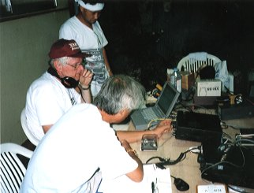
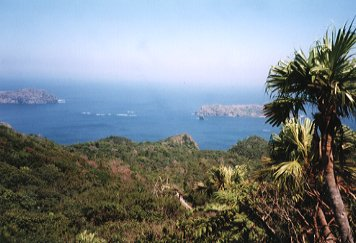

(左)2m EMEの信号に神経を集中。7J1YAMを運用する
K5FUV/7J2ADX(Bill)、JA1BK(溝口)、JK7TKE(福井)
(右)2M EME用のアンテナ(12ele×2)を組み建てる。

【Back Issues Sep.98】
30.Sep.98
(07:00) VK4EMA 05:16 50.118 SSB VK4GPS 05:20 50.077 CW Beacon VK4RGG 05:21 50.058 CW Beacon VK8RAS 05:21 50.047 CW Beacon VK4KR 05:24 50.147 SSB VK4XA 05:31 50.085 CW VK4AXM 05:40 50.101 CW VK4DMI 05:48 50.110/140 SSB VK4TZL 06:46 50.130 SSB ◎ 午後からのVK4は"本格的な"アフタヌーンタイプTEのオープンだった。 VK4EMAの200mW、VK4AXM の5Wが59/599で入感。 久しぶりにVK4の"全て"のビーコンが同時に聞こえていた。
|
◎ [お知らせ] 本日から10月4日まで、KH0(Saipan)に出掛けますので、4日までこのコーナーは休みます。 1エリアの入感状況は、「JI1UHZのHome page」をご覧ください。 尚、KH0では、KH2K/AH0で6m & HFの運用を予定しています。 |
29.Sep.98
(10:00) VK4JH 04:35 50.110/150 CW/SSB VK4DO 05:20 50.110 SSB QSO with HL5XF VK4FNQ 05:27 50.110 SSB V63AO 07:02 50.120 SSB V73AT 08:52 50.110 CW KH2JU 09:23 50.155 SSB ◎ 午後から46MHz帯のVK-TVが入感してきた(46.172MHzが強い)。 続いて入感してきたVK4は強力だった が、QRVしている局は少ない。 コスラエ島のV63AO・西村さんが久しぶりに聞こえて来た。 ◎ VK9LNQを運用したJM1KNQ・阿部さんからの情報によると、11月22日から12月1日にかけて、今回運用 されたLord Howe Is.から、VK9LXが運用を予定しているとのこと。 アメリカから数名のオペレーター を集めての大がかりなペディションで、160mから10mのHF帯と、6mが運用される。 VK9LNQを逃した局は このPediに期待。28.Sep.98
(12:00) VK4JH 04:41 50.110 CW VK6JQ 06:59 50.110 CW HL1LTC 08:55 50.110 CW/SSB 9M2TO 09:25 50.118 CW/SSB N7ET/DU7 09:54 50.120 SSB VK4JH 11:03 50.110 SSB VK8RAS 11:08 50.047 CW Beacon VK4FNQ 11:17 50.110 SSB VK2FQ 11:42 50.110 CW ◎ VKのTV(46.172MHz)が入感してきたのは01:00zを過ぎてからで、VK9LNQのQRTのタイムリミットまで には間に合わなかった。 結局、VK9LNQがJAとQSO出来たのは、9月26日の朝の154QSOだけに終わった。 阿部さんからの、出発前の最後のE-mailによると、今日はVK9(Lord Howe Is)でも、49.750MHzのTVは、 全く聞こえない状態だったと。27.Sep.98
(10:00) BV2PU 01:26 50.110 SSB BV2NT 01:46 50.110 SSB VK4JH 03:48 50.110 CW VK4BLK 03:51 50.110/130 SSB VK4TZL 04:25 50.110 SSB VK4JH 04:26 50.110 SSB VK9LNQ 04:28 50.053 CW VVV Beacon RST579 Peak! YB0ARA/9 08:23 50.110 SSB 9M2NK 08:54 50.107 CW 9M2TO 09:24 50.119 SSB/CW VK8RAS 09:44 50.047 CW Beacon(PG66) ◎ 昨日の早朝のVK9LNQのオープンに、今朝のオープンを期待してワッチした局も多いと思われるが、 "二日と同じ状態は続かない"と言われる6mのコンデション通り、期待は完全に裏切られた。 一時的に46MHz帯のVK-TVは上昇してきたが、50MHzでVKが入感してきたのは、03:00zを過ぎてからだ った。 それでも、VK4が入感していた04:28z(13:28JST)に、50.153MHzのVK9LNQのビーコンが短時間 入感してきた。 信号はピークでRST579程度まで上昇したが、ビーコンが"VVV DE VK9LNQ VK9... " の「OP不在」のものだったため、残念ながらQSOには至らなかった。 VK9LNQ・阿部さんは、QRTする明日(28日)の01:00z(10:00JST)まで、6mをワッチしているとのこと。26.Sep.98
(13:00) *VK9LNQ 22:17- 50.153 CW/SSB QSX 50.156MHz VK4DO 03:39 50.110 CW VK4JH 03:46 50.110/120 SSB YB0ARA/9 03:50 50.110/105 CW VK4ABW 03:54 50.110/150 SSB VK4BLK 09:16 50.110/115 SSB V73AT 09:29 50.110 CW VK4FNQ 09:40 50.110/150 SSB VK4JH 09:49 50.110 SSB N7ET/DU7 11:19 50.120 SSB ◎ 早朝からVK9(lord Howe Is)の入感があった。 VK9LNQ・阿部さんからのリポートによると、22:17z にJA5JUGが50.153MHzのビーコンをコールしてきたのが最初。このオープンから約1時間の間にCW/SSB で、154(143局)のJAとQSOに成功した。 オープンは東日本が中心で、JA3、4、5、6はほとんどQSO出 来なかったとのこと。 尚、JA側にはVK9LNQと同時にVK2、4も入感していた。25.Sep.98
(12:00) VK5AYD 08:27 50.110/120 SSB VK2QF 08:50 50.110 CW VK4GPS 08:58 50.110 CW KH2/K4SXT 11:37 50.110 CW V73AT 11:45 50.105 CW VK4YPM 11:48 50.120 SSB VK4BLK 11:51 50.125 SSB ◎ 珍しく03:00z頃から45.240/250/260MHzのZL-TVが入感してきた。 04:30z頃に最も強かったが、ZL の入感はなかった。 VK-TV(46.172MHz)が入感してきた06:00zにはZL-TVはフェードアウト。 08:30z頃から、VK-TV(46.172/240MHz)がフルスケールまで上昇、50MHz帯でVK2、4、5が入感してきた。 ◎ VK9(Lord Howe Is)に滞在中のJM1KNQ・阿部さんから連絡によると、現在VK9LNQのコールサイン で同島から下記の要領でQRV中との事。 運用場所は以前にVK9LXが運用した"Ebbtide Apartment"で、 JAに対するロケーションは、島の北側の山にギりギリ引っかからないFBな場所。 週末の9月25-27日には集中的にワッチしているとの事。 運用周波数がチョット高めなので、ローカ ルの混信が心配されるが、VKの入感もリポートされてきているので、03:00z前後にオープンの可能性 がある。 QSLはJM1KNQ本人まで。 コールサイン VK9LNQ 運用機関 9月28日 01:00z(10:00JST)まで 使用Rig TS570とIC706 アンテナ ラディックス6エレ 5mH 周波数 50.153MHz(SSB・CW) 50.053MHz(RTTY) ビーコン 50.153MHz 近くにOPがいない時 : VVV DE VK9LNQ VK9LNQ LORD HOWE リグの前にOPがいる時 : CQCQCQ DE VK9LNQ VK9LNQ VK9LNQ LORD HOWE AR K24.Sep.98
(10:00) ◎ 46.172MHzのVKのTVは、02:00zには入感していたが、午後になっても50MHzでのVKは聞こえなかっ た。 05:00zにはTVもフェードアウト。23.Sep.98
(12:00) HL1LTC 08:09 50.110 SSB/CW DU100GF 08:10 50.125 SSB VK6JQ 11:47 50.110/085 CW ◎ V73AT・TimからクラスターにJAのBeacon(JA1、2)の受信リポートが載っていたが、彼も最近はあ まりCQを出さなくなったので、JA-V73間のオープンのパイロットとして使えなくなってしまった。 50.006MHzでQRVしていたV73SIXのビーコンの周波数は、50.014MHzに変更されたとのこと。 "JA2IGYなみ"に強くなればV73のオープンの目安になるのだが、一度も聞いた事がない！？。 DU1OOGF Georgeさんは今日も短時間ながら強力に入感していた。
|
Flash!(続) E3 Eritria QRV！ ◎ 昨日お伝えしたE3(エリトリア)から、E31AA(OP ZL3CW・Jacky)がQRVしてきた。 今朝22:30z(07:30JST)頃から14.195MHzのSSBで入感していた。 |
22.Sep.98
(13:00) ◎ 昼過ぎに46.172MHzのVK-TVが上昇したが、50MHzでのVK4の入感は確認出来なかった。 ◎ 昨日お知らせした9M2NKの情報の中で、今日(22日)が祝日になる可能性...と、お知らせした後、 日程が急遽変更となり、来週の月曜日(28日)が祝日(英連邦競技大会)となることに決まった。 これにより、今週末から3連休となり、9M2NKは昼間の運用が可能になったとの事。 ◎ 今週は、8号、7号と台風がたて続けに日本列島を縦断するといった悪天候で、アンテナを心配し ながらのワッチとなった。 特に今年は"異常気象"の影響か、日本近海で発生する台風が多いのも特 徴で、"待ったなし"の急接近となってあわてさせられる。 現在接近している7号は、先にフィリピ ンでフェリーを転覆させる被害を与えた台風だ。 今年、日本に接近した台風の中では比較的遠方から来た台風だが、この7号の軌跡を逆上って行く と、その発生場所はフィリピンの首都・マニラの西方の、ちょうどBS7(スカボローリーフ)の付近と なっている。 1997年の春にBS7Hを運用したあの海域で生まれた台風が、はるばる日本までやって来 るのかと思うと、複雑な感慨をおぼえる。 過去3回運用されたBS7のDX-Peditionが、いずれも春に行われているのは、台風が発生しない時期 を選んでいるのが主な理由。 9M0Cを運用した南シナ海のスプラトリー(Pulau Layang Layang)も季 節風が強くなる11月には閉鎖される。 一見、自然現象とは関係がなさそうに見える"HAM Radio"の 運用も、結構影響されているのだ。
|
Flash! E3 Eritria 解禁！ ◎ 6mには今のところ直接関係はないが、1996年の冬以来運用が差し止められていたE3(エリトリア) からのアマチュア局の運用が、1998年9月21日(昨日！)から解禁になった。 E3からの運用を希望する者には、申請書と＄500でライセンスが発給される。 E3はウォンテットエンティテーのNo.5にランクされているので、今後運用希望者が殺到するものと 思われる。 既に現地に向かっているペデショナーもいるので、一両日中にも運用が開始されるかも？。 免許の申請先は次の通り。 The address is: Ministry of Transport & Communications Communications Department PO Box 4918 Asmara - Eritrea Phone: (291-1) 115 847 or 126 965 Fax: (291-1) 126 966 ( TNX ZL3CW・Jacky & JA1BK・Kan ) |
21.Sep.98
(12:00) VK6AOM 05:46 50.110/120 SSB HL1LTC 07:27 50.110/130 CW VR2SIX 07:28 50.075 CW Beacon VR98LC 07:42 50.120/103 SSB/CW VR2MQ 07:55 50.150 SSB VR2ZGK 08:06 50.180/190 SSB VR2ZLP 08:24 50.110 SSB VR2IL 09:15 50.130 SSB BG7NI 09:20 50.200 SSB VK8RAS 09:30 50.047 CW Beacon VK8VF 10:49 50.057 CW Beacon VK8KTC 10:50 50.110/130 SSB VK6JQ 11:08 50.100 CW ◎ 昨日と同じようにVK6の入感の後、強力なVR2'sのオープンへと続いた。 さすがにウイークデーの 午後は局数も少なく、昨日ほどの混乱にはならなかった。 ◎ 最近よく入感している西マレーシアの9M2NK・中村さんからの情報によると、昨日の06:43-07:56z のオープンで、QSO出来たJA局は7、8エリアを除く14局だったと。 9M2ではローカルTVのバズの混信 で、弱い信号をコピーするのに苦労しているが、中村さんは比較的バズの妨害の少ない50.107MHzで QRVしている。 9月に入ってから昨日のオープンの他に、沖縄を除くJA本土とは6、11、12、15、18日 にオープン、延べ17局とQSO出来たとの事。 中村さんは22階の北向きのベランダに突き出した、ラディックスのＶ型2エレHB9CVとIC-736で出て いるが、JAには信じられないほど良く入感してくる。 今までのところ仕事の都合でJAとは13:00z以降のオープンでのQSOが多いが、9月12日や昨日(20日) の様に休日には早い時間にもQRVしている。 尚、明日(22日)は急遽、国民の祝日(英連邦競技大会) となる可能性があるので昼間にもワッチ出来そうとの事。 夕方からの50.107MHzのCWに注意。20.Sep.98
(12:00) VK5BC 04:21 50.110/150 SSB VK2QF 04:24 50.110/120 SSB VK4GPS 04:28 50.110 CW VK4BLK 04:40 50.110/130 SSB VK6AOM 06:26 50.125 SSB 9M2NK 06:55 50.107 CW VR2SIX 07:45 50.075 CW Beacon N7ET/DU7 07:46 50.075 CW VR2XMT 07:49 50.140 SSB VR2PM 07:50 50.120 SSB VR2ZGD 07:54 50.130 SSB VR2XHW 07:59 50.160 SSB VR98BG 08:00 50.099 CW VR98LC 08:01 50.100 CW BD7JG 08:07 50.150 SSB *VR2XHW 08:27 50.160 SSB VR2ZGK 08:32 50.229 SSB VR2ZLP 08:38 50.110 SSB VR2RS 08:52 50.090 CW DU100GF 09:00 50.105 SSB BG7NI 09:28 50.265 SSB P29KFS 10:12 50.110 SSB VK8VF 12:00 50.057 CW Beacon ◎ 久しぶりに午後から46.172/240MHzのVKのTVが強力に入感、引き続いてVK2、4、5が入感してきた。 信号はQSBがあり弱いもので、05:00z過ぎにはVK4方面のコンデションは落ちてしまった。 3エリア ではVK7JGの入感もリポートされているが、1エリアでは確認出来なかった。 06:00z頃から再びVK6が入感してきたが、こちらは信号も強くJA'sのパイルになっていた。 久しぶりに早い時間帯(06:40z頃)の入感となった9M2NKは、比較的強力?な信号で聞こえていたが、 東日本では49.750MHzのTVのバズが強力で受信の障害となっていた。 その後に入感したVR2'sと中国 (BD7/BG7)は、09:40zにフェードアウトするまで、Es最盛期なみの"大オープン"だった。 珍しくDU1GF・Georgeさんも"DU100GF"のコールサインで聞こえていた。 ◎ JF2MBF(Nob)グループによる8Q7(モルジブ)の6mは残念ながら本日(20日)撤収した。19.Sep.98
(14:00) VK6JQ 07:38 50.100 CW VK8VF 08:25 50.057 CW Beacon YB0ARA/9 10:55 50.110 CW VK8RAS 11:00 50.047 CW Beacon VK4APN 11:05 50.110 CW/SSB VK8KTC 11:08 50.110 SSB VK8AH 11:55 50.110 SSB VK4DHF 11:58 50.110 SSB N7ET/DU7 13:40 50.080 CW ◎ 9月16日付けの新聞各紙に「クリスマス島に日本のシャトル実験場建設」の記事が載っていた。 宇宙開発事業団(NASDA)が日本版スペースシャトルの実験場として、中部太平洋赤道直下のキリバス 共和国のクリスマス島の南東部の半島全体を「宇宙港」として20年間無償で借りる契約に、キリバス 政府との間で合意したというもの。 クリスマス島は1956－1963年の間、英、米両国の核実験場として使用されていた。後に宇宙事業団 が島の北側に人工衛星の追跡局を設置しているが、今回の調印で1950年代に英国が核実験の機材運搬 用に建設した南東部のイーオン滑走路の専用使用権を得、滑走路の補修、港湾、道路、電力、水、自 然環境保全などの整備を同事業団が行うことになった。 このクリスマス島はDXCC上では東キリバス(Eastrn Kiribati)・T32としてわれわれにお馴染みのと ころ。 6mでは1982年頃にQRVしていたT32AE(ex VR3AR)以来、最近では常駐局のアクティビティはな い。 最新の入感は1990年4月にOH2BH/VE7SV/JG2BRIのグループが、AH3C/KH5Jの帰りに運用したT32B があるだけ。 今後は日本からの技術者をはじめ、関係者の出入りが多くなることが予想されるので、 この島からの"日本人ハム"によるアクティビティが期待できるものと思われる。18.Sep.98
(12:00) VK8VF 11:00 50.057 CW Beacon VK6JQ 11:07 50.100 CW YB0ARA/9 11:20 50.105 CW VK8MS 11:49 50.110 SSB ◎ 9月15日にコスラエ島から6mにQRVしていたV63CP/V63CVの両局は、17日に島を離れ、現在ポナペ島 からQRVしている。 ポナペからは20日まで運用する予定だが、残念ながら6mには出られない。 コスラエ島を離れる際に6mのAMPを置いてきたとのことなので、常駐局のV63AO・西村さんの信号が以 前より強くなるかも？。 夕方の50.120MHzに注意。 ◎ JF2MBF(Nob)グループによる8Q7(モルジブ)からの運用が続いているが、こちらも今のところ6mでの 入感リポートはない。 5,000Kmエリアの9M2までは夜間に頻繁にオープンしているが、8,000Kmの8Q7ま での距離は、この時期やはり"遠い"。17.Sep.98
(14:00) VK8VF 12:00 50.057 CW Beacon ◎ 8月末以来SF(ソラーフラックス)、SSN(サンスポットナンバー)が150を超える日も見られたが、こ れはあくまでも一時的なもので、現段階のSSNの平均値はまだ2桁の半ばを超えた程度。 サイクル23がスタートした1996年5月からの上昇カーブを、過去のサイクル21、22と比較してみると 両者よりも緩やかな上昇を示している。 登り初めが急なサイクルはピークも上昇すると言われてい るので、この説からすると今サイクルはあまり上昇は期待出来ない...となるのだが、残る2年数カ月 後には"逆転"していることを願わずにはいられない。16.Sep.98
(12:00) VK8VF 11:48 50.057 CW Beacon YB0ARA/9 11:51 50.110 CW ◎ 心配された台風5号は時速50Km以上のスピードで関東平野を駆け抜けて行った。東京では午前8時頃 から1時間ほど強い雨と風で荒れただけで、その後は青空が広がる秋晴れとなった。北関東から東北に かけて被害を受けた所もあったようだが、意外なほど"短い台風"にホッとした局も多かったのでは？。 残念ながら台風はコンデションまで"吹き飛ばして"しまったのか？ 夕方までは6mのDX入感は確認され なかった。 ◎ 今日(16日)からいよいよ8Q7(モルジブ)のQRVが始まった。 05:50z頃に28.480MHzで8Q7US(JR2KDN)、 07:30z頃には24.896MHzで8Q7CC(JI1NJC)が聞こえていたが、この時間帯の信号は弱かった。 6mのセッティングも終わったとの事なので、50.105MHzのビーコンもQRV中と思われる。15.Sep.98
(14:00) V73AT 05:39 50.106/130 SSB V63CP 05:43 50.245/120 SSB VK4DB 06:17 50.110/139 CW/SSB VK3YY/4 06:18 50.110/150 SSB V63CV 06:52 50.120 SSB VK4BLK 08:17 50.130 SSB VK8VF 11:38 50.057 CW Beacon (TNX JI1UHZ) ◎ 先月末の台風4号に続いて、5号が急接近している関東エリア。 早々と"自衛"のためにアンテナを クランクダウンしたために、DXワッチの意欲は大幅に低下。 おまけに台風来襲前に"一仕事"と、仙台 に出掛けた帰りに、"宮城県下の震度4の地震"の影響で東北新幹線が停電、東京到着寸前の車内に2時 間以上も"かん詰め"状態。 特急券を払いもどしてもらい"得"をした気分だったが、これで午後からの DXコンデションに間に合うはずだった日程は、大幅に狂ってしまった。 クラスターにはV73AT、V63CP/CV(コスラエ島)、VK4、6、8の入感が05:30z頃から9:30z頃にかけてリ ポートされているが、これは最近の6mの午後からの入感パターン。 これで深夜に9M2の入感へと続け ば最良のコンデションと言えるのだが、未明に台風の接近が予想されている東日本ではそれどころで はない？。 台風4号の時は小笠原・父島に滞在中で、4日間も"暴風圏の中"を経験したばかりだが、 本土の台風は、半日もすれば過ぎ去ってくれるのはありがたい？。14.Sep.98
(12:00) VK8VF 11:45 50.057 CW Beacon VK8MS 11:50 50.110/150 SSB VK8AH 12:14 50.110 SSB ◎ JF2MBF(Nob)グループによる8Q7(モルジブ)からの運用は、9月15日から23日までの予定で行われる が、メンバーは8Q7のライセンスを無事受領し、14日成田空港を出発した。 コールサインは先にお知 らせした(本欄9月6日参照)通りのものが発給された。 したがって6mは8Q7BBのコールサインが使われ る。現在のコンデションでは東日本からのQSOはかなり難しいが、JR6(沖縄)、JA6など西日本ではオー プンの可能性は十分にある。 夕方からの50.105MHzに注意。13.Sep.98
(09:00) N7ET/DU7 07:48 50.105 CW ◎ 昨日(12日)は日中からVK4KK等の入感があり、このFBなコンデションは夜まで続きV73AT、N7ET/DU7、 VK4/6/8、9M2NK、9M2TO(08:00-09:00z)が入感した。 9M2TOは50.118MHzで"CQビーコン"を出している が、今日は昨日オープンした08:00z現在、まだJAの入感は無いと。 14:00z前後にもう一回コンデション が上昇するので要注意。 尚、9M2KTも6mにスタンバイしているとの事。 ◎ VSG(第28回)/VCG(第16回)全国大会が9/12、13日の両日、山梨県甲府市で開催され、前夜祭から50 局を超える参加者で賑わった。 翌13日のミーティングは当日の参加者を加え、午前9時から開催された。 今回の開催エリアを代表して地元、山梨のJJ1RPJ・竜沢実行委員長の挨拶の後、JA1RJU(小笠原)によ る「9M0C DX-Peditionの報告」、JR2HCB(水谷)の「6mのDXコンディションについて」、JQ1HBT(星)の 「IOTAの紹介」など、各局の講演が続いた。 最後は、次回開催地の石川県を代表してJH9CYY(小塩)か らの挨拶があり、全員で記念撮影の後、来年のJA9エリアでの再会を約束して12:00JSTに閉会した。12.Sep.98
(06:00) VK4KK 05:40 50.110 CW/SSB ◎ 毎年恒例のVSG(第28回)/VCG(第16回)全国大会が9/12、13日の両日、山梨県甲府市で開催される。 各エリア持ち回りのこの大会は、昨年の0エリア(長野県塩尻市)から1エリアに引き継がれての開催と なる。 毎年、秋に開催されるミーティングも、今年はまだ6mのDXコンデションが本格的に上昇して いない時期だけに、話題にもいまひとつ盛り上がりに欠けるところだが、今大会では上昇を続けるサ イクル23を"肴"に、一足先に各局のDX談義に"ハナ"が咲くものと思われる。11.Sep.98
(10:00) KH2EI 08:35 50.110 SSB ◎ ここ4、5日はSSN/SFとも活発で、6mのコンデションも荒れ模様ながら上昇している感じ。 こんな中、 JA5CMO・前田さんは昨日(10日)の01:35z(10:35JST)頃、50.148MHzでラグチューをしている"スペイン語" の局を受信。アンテナの方向は約90度(東)だった。この時間には28MHzでLU(アルゼンチン)が強力に入感 しており、6mで聞こえた局は、ひょっとしたら南米の局だったかも...と。 沖縄からはPYに対して良く ルートが開くが、本土側ではLUに対して良いので、可能性は十分ある。 このままコンデションが上昇すれば、これからの秋のシーズンは午前中の太平洋中部、ハワイ、南米 の入感が期待出来そう。 Guamからの新局？KH2EIはJA'sの"ド"パイルの中、15分ほどでQRTした。 ◎ 今年のハムフェアに参加すると伝えて来ていたホンコンのVR2XMT(Charlie)等は、予定通り来日した。 日曜日(23日)には秋葉原、八王子市のJE1TGN宅を訪れるなどして、JA各局とのEyeball QSOを楽しんだ。
10.Sep.98
(10:00) V73AT 06:34 50.110 CW V63AO 06:38 50.120 SSB VK6JQ 09:45 50.100 CW ◎ 昨日同様、V73AT、V63AOがFBに入感していた。 残念ながらJA側で聞いている局が居なかったのか、CQ を連発しただけで引っ込んでしまった。 ◎ 先のH40AA/H40ABのTemotu Isに続いて、"Marquesas Is"と"Austral Is"のFO0の2つがニューエンティテ ィーとしてDXCCに認められた。 クレジットの受付はTemotu Isと同じ1998年10月1日から。 今のところ3エンティティーとも6mでは未交信だが、QRVすればJAから比較的"楽"にQSO出来るエリアなの で、今後の運用に期待したい。09.Sep.98
(12:00) V73AT 06:09 50.110 CW *V73AT 07:14 50.110 CW V63AO 07:36 50.120 SSB V73AT 08:13 50.105 SSB VK4JH 11:24 50.110 CW ◎ フレアーの影響で午後の6mバンドはノイズレベルが高い。 この中からV73ATのCQだけは相変わらず頻繁 に入感していた。 50.006MHzでV73SIXのビーコンがQRVしているとのことだが、10Wにロングワイヤーの信号 は確認出来なかった。 ポナペから南東に550Km離れているコクラエ島にQSYしたV63AO・西村さんの声が久しぶりに聞こえていた。 この島を訪問していたV63KA/V63MCが昨日帰国したとのことだが、入れ替わりにこの島を訪問するV63CPが6m にQRVする予定。08.Sep.98
(10:00) V73AT 07:42 50.110 CW ◎ V73とKH6/7のQSOが頻繁にリポートされているが、JAにはKH6/7はなかなか聞こえて来ない。 "横パス"がもう少し広がってくれば、F2によるKH6/7→南米へとルートが開けて来るのだが、まだ時期尚早 か。是非、この秋には期待したいところ。 V73ATがアクティブな Marshall Is.から新局のV73GTがQRVを始 めた。 QTHはGLがRJ39のNamur Is。ちなみにV73ATのGLはRJ38。07.Sep.98
(10:00) ◎ 昨日の反動？か、今日の午後のコンデションは落ち込んでいた。 昨夜の50.107MHzの9M2NKは、日付が変わった7日の00:30JST(15:33z)頃まで聞こえていた。 CQの連続だったが、応答するJAは居なかった。9M2NK(JE1JKL)・中村さんの話では、早い時間はローカル のTVのバズが強いので、比較的妨害の少ない50.107MHzでQRVしているとのこと。16:00z(02:00JST)以降は TV放送が終了するのでバンドは静かになるとのことだが、JAに対してコンデションがこの時間まで持続し てくれるかが問題。06.Sep.98
(15:00) V73AT 07:40 50.104 CW V63KA 08:03 50.120 SSB QSL Via JH8BKL NH2C 08:13 50.130 SSB QSL Via JI3ERV N7ET/DU7 08:55 50.104 CW VK4BKS 10:17 50.110 CW VK8VF 12:00 50.057 CW Beacon *9M2NK 14:44 50.107 CW(H) 9M2NK 15:01 50.107 CW ◎ V73ATの入感に続いてV63KA、NH2Cと太平洋方向からのFBな入感で賑わった。 特にGuamのNH2C(JI3ERV) は強力で、エリア指定とスプリットでパイルをさばいていた。 09:15zにはN7ET/DU7を除いて全てフェード アウト。 深夜の9M2NKは弱い信号ながらQSBのピークでは良く聞こえていた。 ◎ 8Q7(Maldives)からQRV JF2MBF(Nob)グループによる8Q7(モルジブ)からの運用が、9月15日から23日までの予定で行われる。 運用するバンドは160mから6mまでのオールバンド。 6mでは50.105MHzで"CQ CQ CQ DE 8Q7BB QSX 135 ES UP K"のBeaconを発射する。 使用RigはIC-706(100W)に5ele。 QSLはJR2KDN(Buro or SAE+IRC or GS)宛。 参加メンバーとコールサイン(変更になる場合もある)は次の通り。 KB3CCC(Zhen/YL)=8Q7LI JR2KDN(Yuu)=8Q7US JI1NJC(Yasu)=8Q7CC JJ1AEB(Hiro)=8Q7HA JF2MBF(Nob)=8Q7BB (TNX JF2MBF)05.Sep.98
(12:00) V73AT 09:23 50.104 CW VK6JQ 10:51 50.098 CW VK8VF 10:58 50.057 CW Beacon ◎ この一週間で6mのコンデションはだいぶ変わった。 とくに夕方(09:00z頃)からのTEによるパスは広がっ てきた。 V73からVK、DUが同じ時間帯に聞こえる様になった。 JD1(小笠原)で聞いた6mのコンデションも同じ傾向だったが、入感してくるエリアの範囲と信号の強さは、 残念ながら？1エリア(本土)で聞く"それ"とは比較にならないほどFBだった。 たまたま聞いた9月2日のコンデションが良かったのかも知れないが、夕方からJR6、BV、VR2がほとんど 同時に入感、その後はVK4、YB、V73が13:00z頃まで安定して聞こえていた。 特にV73ATは、信号はそれほ ど強くはなかったが、遅くまで"ラグチュー"が出来そうなほど安定していた。 現在、小笠原から6mにQRVしているのは、父島からアクティブなJD1BIA・田久保さんだけだが、民家が集 中している二見港付近からは、JA本土に対して300m程の"山越えQSO"となり条件は良くない。04.Sep.98
(14:00) YB0ARA/9 09:08 50.110 CW VK8KTC 11:46 50.110 SSB VK8VF 12:30 50.057 CW Beacon N7ET/DU7 12:56 50.101 CW ◎ 一週間の予定だったJD1(Ogasawara Is)での運用は、父島西方で発生した台風4号の影響で、滞在が延期 となり、本日(4日)の帰京となった。 本土での台風は、大体一日で通過してしまうのが普通なのだが、台風 の発生場所に近い小笠原諸島では、"発達しきれない台風"が足踏み状態で停滞する事が多いとかで、今回も 丸々4日間、雨と風に悩まされる事となった。 小笠原行きの主目的だった144MHzでのEMEも26、27日に早々とQSO出来、こちらは大成功だった。 6mの運用はスケジュールの後半に用意していたが、結局本格的な運用は台風通過後の9月に入ってからとな り、9月2日のオープンでVK4's、V73、BV、VR2、YB0、JD1、HLとJR6、JA1、2、5エリアとQSO出来た。 JD1のDX-Peditionの詳細は改めてリポートの予定。

◎ 9月に入りコンデションも上昇の兆しが見られ、特に夜間の赤道越えのパスが楽しめる様になった。 YB0ARA/9はJD1でも良く入感していたが、今日(4日)はJA1からもFBにQSO出来た。 沖縄のJR6GV局からの情報では、8月31日にA45ZNが09:00z頃から4時間近く入感、春のオープンに続き、再び QSOに成功した。01.Sep - 03.Sep.98
JA1RJU & 7J1YAM(Chichijima Ogasawara Is.) の運用のためリポートは休止しました。
| Index | Back Issues |
|---|---|
最新情報へ戻る |